Electronic and Embedded Systems Engineering
IoT · AI Vision · Industrial AutomationFinal-year Electronic and Embedded Systems Engineering student at Suranaree University of Technology. Passionate about developing intelligent automation solutions by integrating ESP32, MQTT, Computer Vision, and industrial control systems.
B.Eng. Electronic and Embedded Systems
2023 – Present | Nakhon Ratchasima
2021 – 2023 | High School
C, C++, Python, PyQt
PyTorch, Roboflow, YOLO, OpenCV
RobotStudio (ABB), Cobot (CR5), PLC
Arduino, ESP32, IoT, Node-Red, Grafana, MQTT
MySQL, AutoCAD, SolidWorks
NI Multisim, KiCad, PCB Layout, CNC Milling
Developed an IoT monitoring system utilizing ESP32, MQTT, and SQL to integrate sensor data (DHT22/RFID) with a custom GUI, enabling real-time device control and realtime dashboard with grafana.
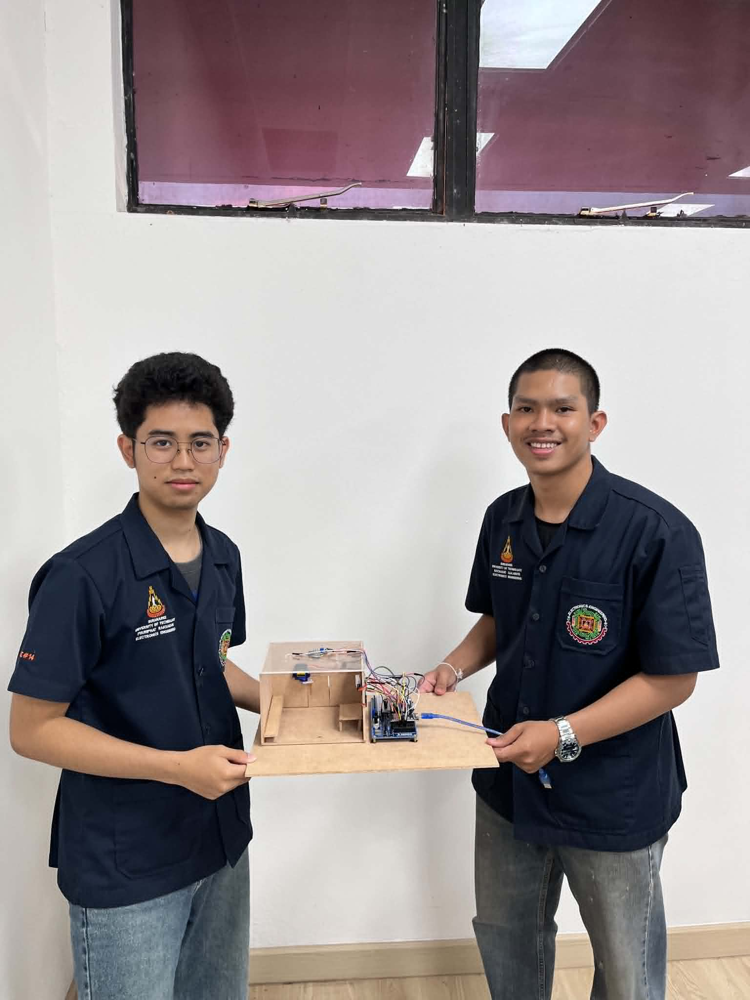
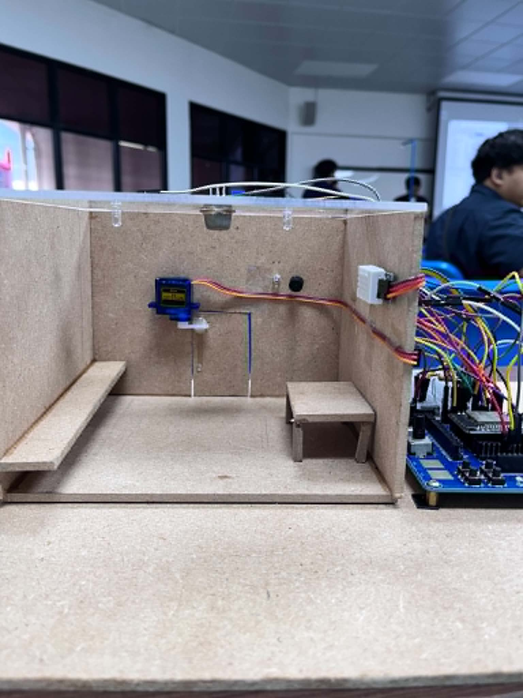
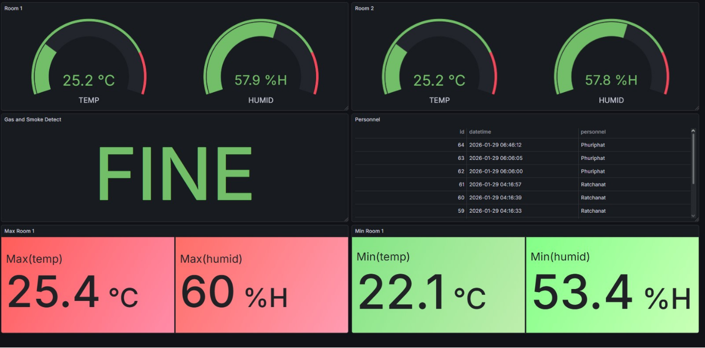
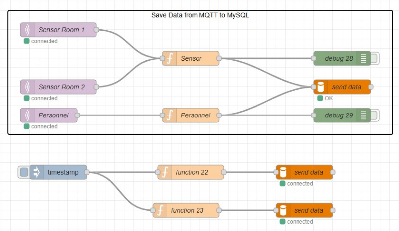
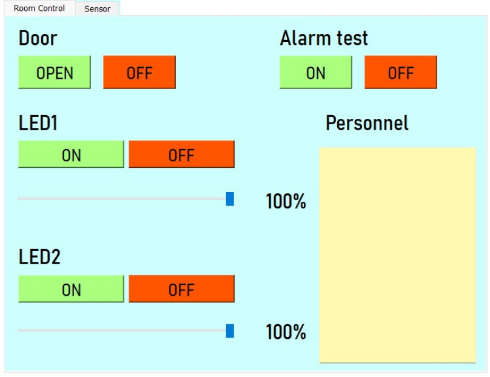
Trained a YOLOv8 model on 885 images to detect helmetless motorcyclists and vehicles without license plates. Built a GUI for real-time CCTV stream processing, and snapshot logging.
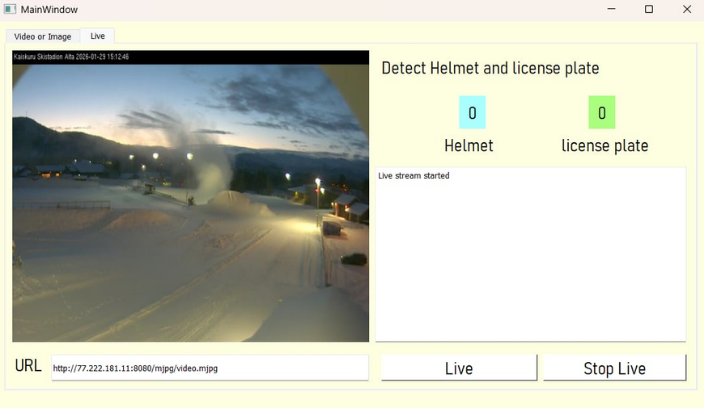
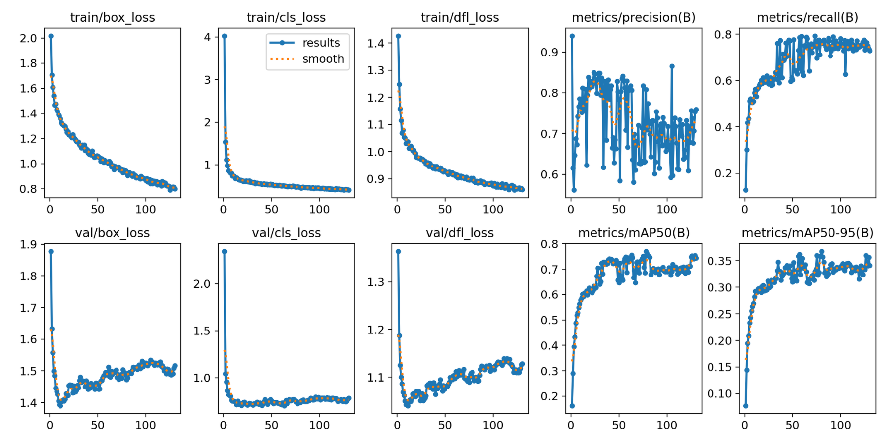
Designed a sorting system using Schneider PLC (TM221CE24U) and EcoStruxure with advanced ladder logic for conveyor and palletizing control, coupled with HMI interface.
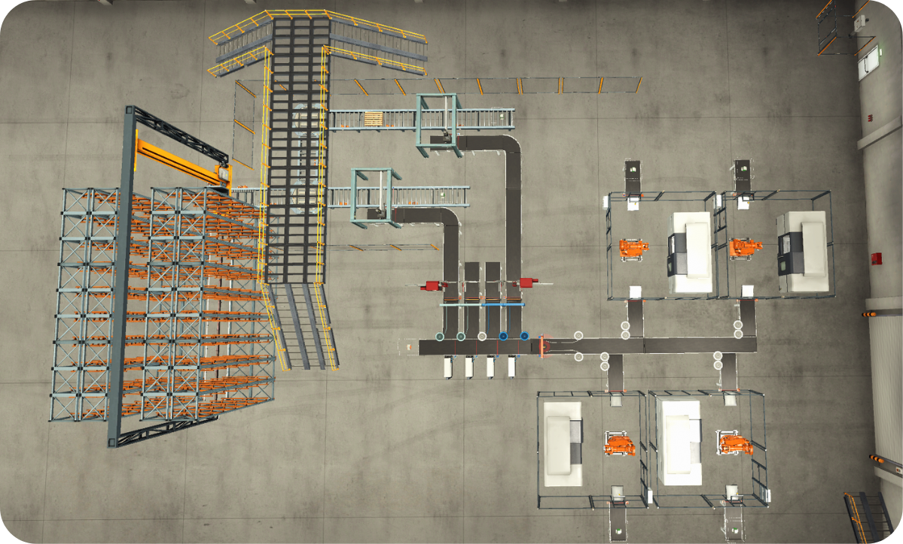
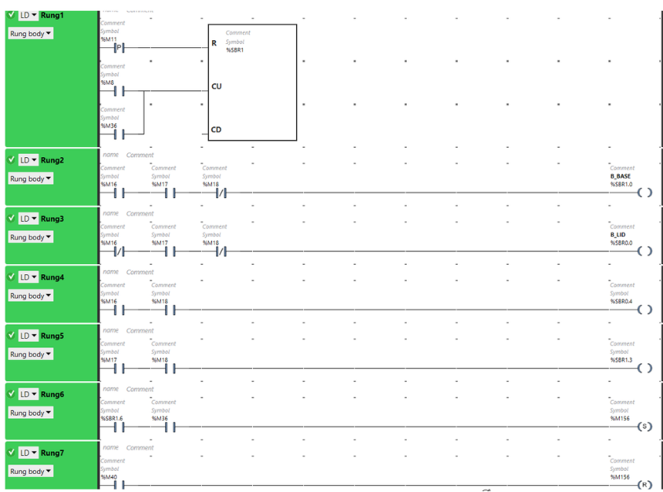
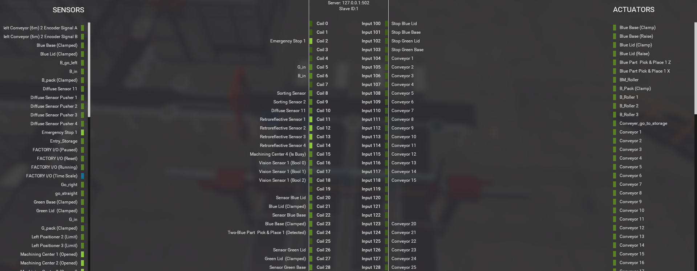
Designed and simulated a plasma circuit using NI Multisim, transitioned to KiCad for PCB layout and CNC milling. Assembled and tested the prototype's oxidation effects.
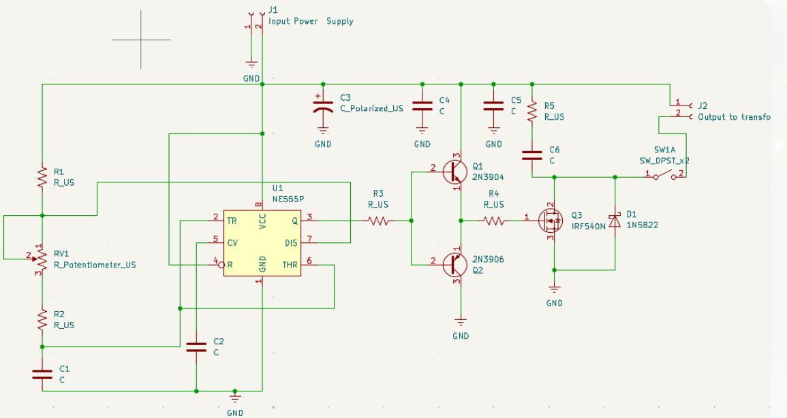
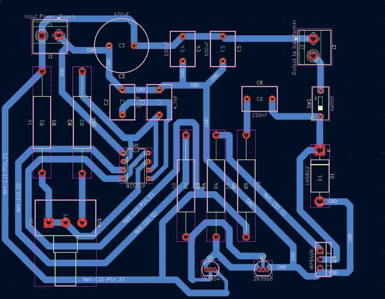
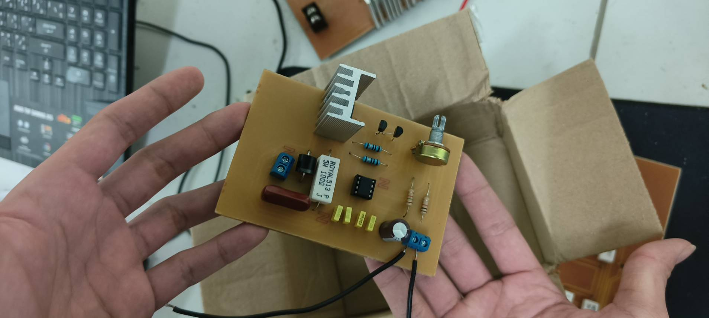
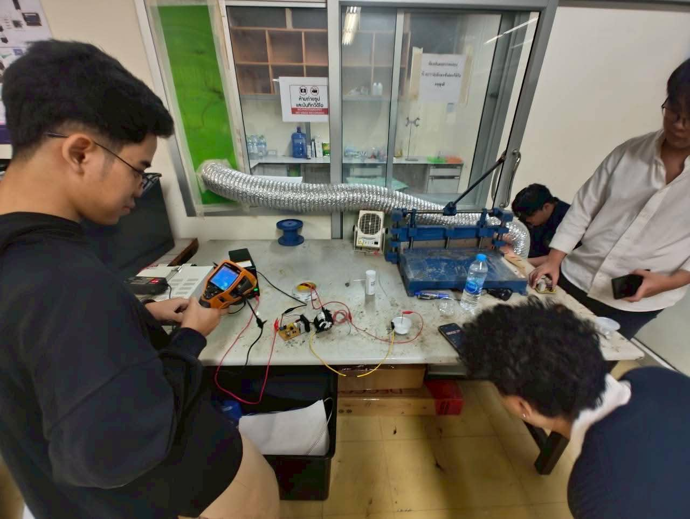
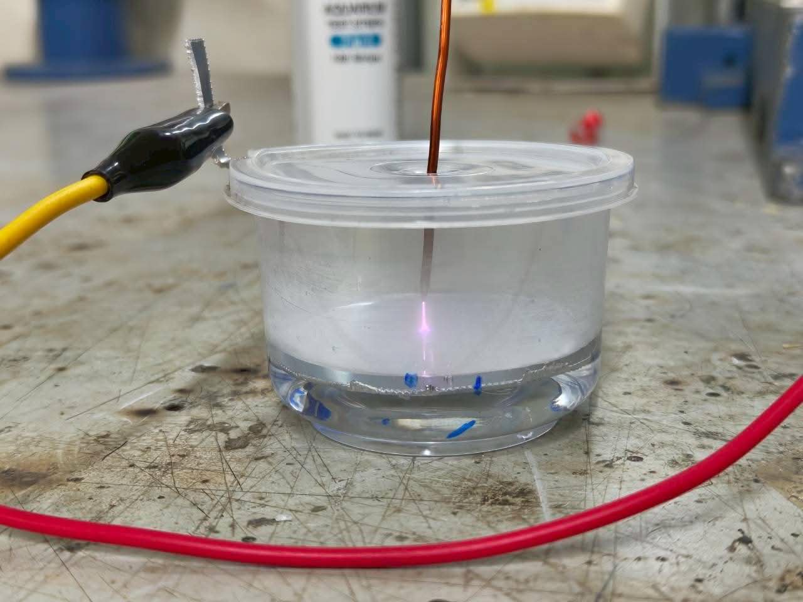
Simulation and control of a conveyor belt system integrated with an ABB IRB 1100 cobot in RobotStudio, including 3D conveyor modeling, cobot configuration, and custom RAPID programming for automated workflow control.
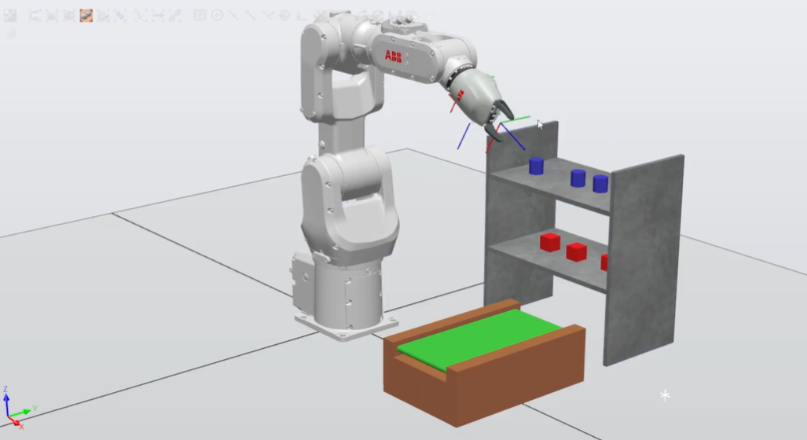
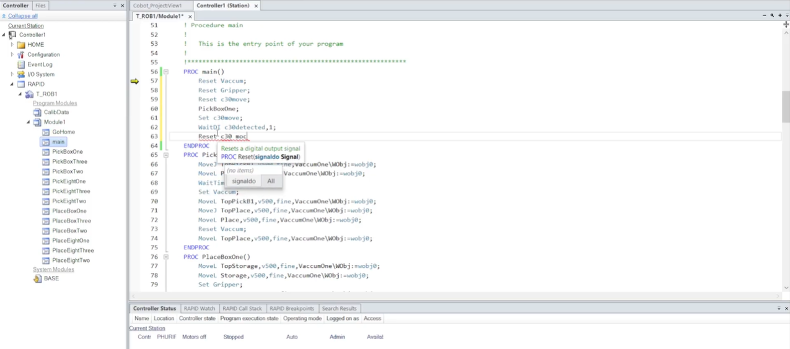